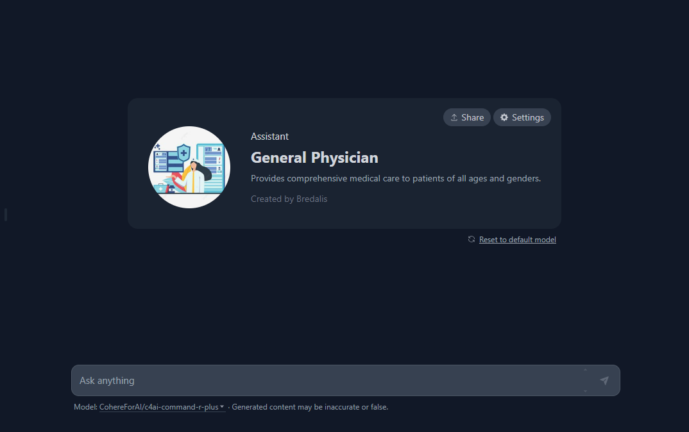

✨ Medicina General ✨
01. Definición de Medicina General
La Medicina General, también conocida como Medicina Familiar o Medicina Interna en algunos contextos, es una especialidad médica que se centra en la atención integral y continua del individuo y la familia a lo largo de la vida. Los médicos generales son responsables de la prevención, diagnóstico y tratamiento de una amplia variedad de enfermedades y condiciones médicas, así como de la promoción de la salud y el bienestar general.
02. Tipos de Medicina General
Medicina Familiar: Se centra en la atención médica continua e integral de individuos y familias a lo largo de sus vidas. Los médicos de familia tratan una variedad de enfermedades y condiciones, proporcionando atención preventiva, tratamiento de enfermedades agudas y manejo de enfermedades crónicas. Se enfocan en el cuidado holístico, considerando el contexto familiar y social del paciente.
Medicina Interna: Los médicos internistas se especializan en el diagnóstico, tratamiento y prevención de enfermedades en adultos. Tratan una amplia gama de condiciones médicas complejas y crónicas, como diabetes, hipertensión, enfermedades cardíacas y respiratorias. A menudo actúan como consultores para otros especialistas y brindan atención primaria a los adultos.
Pediatría: Aunque es una especialidad en sí misma, la pediatría a menudo se superpone con la medicina general en la atención de niños y adolescentes. Los pediatras se enfocan en el crecimiento y desarrollo de los niños, así como en la prevención y tratamiento de enfermedades pediátricas.
Geriatría: Esta subespecialidad de la medicina general se centra en la atención de los ancianos. Los geriatras abordan los problemas de salud únicos de la población envejecida, incluyendo enfermedades crónicas, polifarmacia, movilidad, y problemas cognitivos como la demencia.
03. Descripcion del Especialista
Los médicos generales, también conocidos como médicos de familia, proporcionan atención médica integral a pacientes de todas las edades y géneros, tratando una amplia gama de condiciones médicas y coordinando la atención especializada cuando es necesario.